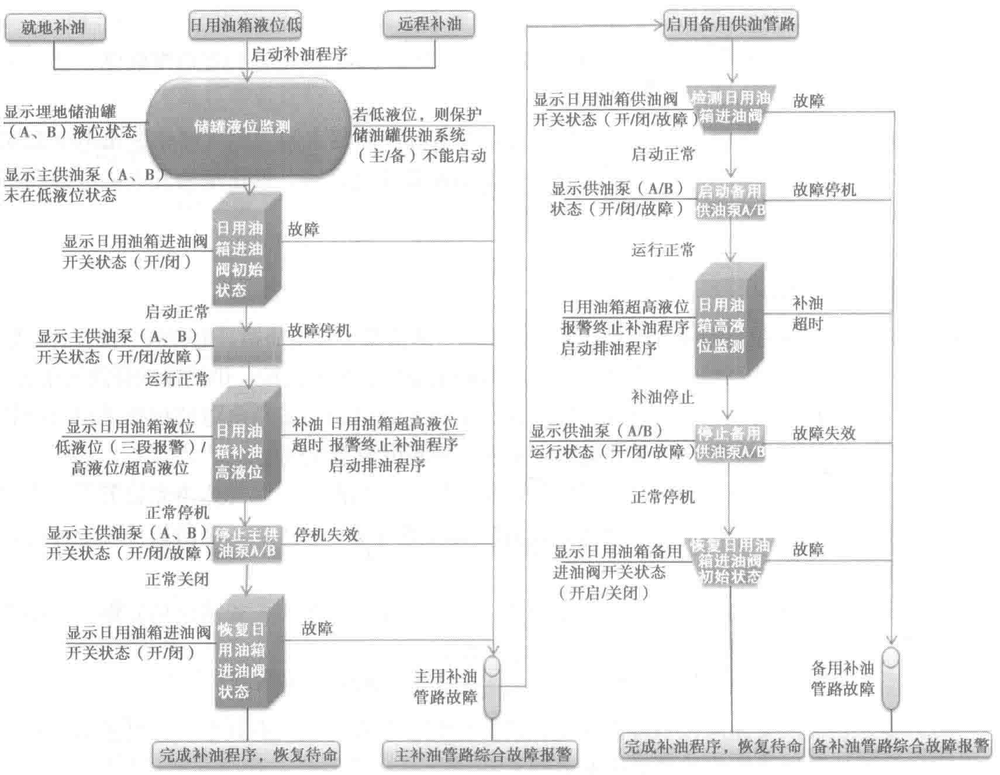
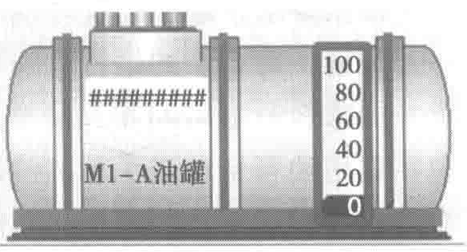

参数可调，部分参数可在现场操作站内直接按需修正调整。
5.4.4 柴油发电机组的运行方式
因为数据中心的重要性，所以在设计时应按系统需求和用户要求来考虑电气系统架构的冗余度。在规划设计柴油发电机系统时，按照需求容量可选用单台独立运行和多台并机两种形式。
- 单台独立运行即单台机组直接与市电主进线进行供电切换。这种方式一般在容量较小的低压系统中较为常见，其特点是系统简单、故障影响面低、可靠性高、启动时间短。

- 多台并机是将发电机组所有能量汇集在一处母线上，经过并机投放。此种方式便于能源调配，但送电时间略长，相比单台投放可靠性略低。一般按N+1或者2N的原则来配置发电机组的数量。机组并联使用在大容量负荷中是比较常采用的一